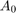

Informacoes do relatorio
- Nome dos Alunos: Andre Luis Maldonado Daniel e Erasmo Costa
- Curso: LT37C - Fundamentos de Comunicacao
- Relatorio de modulacao
O relatorio da modulacao deve conter:
- Modulacao e demodulacao;
- Apresentar de forma legivel as formas de onda da mensagem, da portadora, e da Modulacao, no dominio do tempo e no dominio da frequencia;
- Explicar no relatorio cada forma de onda;
Error using evalin Undefined function or variable 'AM'.
Contents
Exercicio 1
Para que haja uma boa modulacao a frequencia da portadora deve ser maior que a banda do Sinal, ao vizualizar a figura 3 e possivel comprovar que a mensagem nao chega a sendo assim, a frequencia da portadora sendo 20KHz supre o necessario. Para que nao ocorra perca de informacao  deve ser escolhido para que o minimo valor do Sinal, quando somado a seja maior que 0. A funcao min nos garante que foi escolhido corretamente.
%Limpar e fechar tudo clc; %limpa a janela de comandos clear; %limpa as variaveis e funcoes da memoria close all; %fecha as janelas abertas de figuras % Arquivo de audio da mensagem load sound.mat %carrega o arquivo 'sound.mat' para o Workspace Vminimo = min(m); % Reproducao do arquivo sound sound(m,fs) %reproduz o Sinal do vetor 'm', com frequencia de amostragem 'fs' % Tamanho do vetor da mensagem N = length(m); %'N' recebe o tamanho do vetor 'm' (432008) % Periodo de amostragem de m T = 1/fs; %'T' recebe o valor do periodo de amostragem (5.668934240362812e-06) % Vetor de tempo t = (0:N-1)*T; %'t' recebe o vetor de tempo % Frequencia da portadora em Hz fc = 20e3; %'fc' recebe o valor da frequencia da portadora em Hz (20kHz) % Valor DC A0 = 1; %A0 recebe 1 % Portadora c = cos(2*pi*fc*t); %'c' recebe a portadora % Modulando o Sinal s=(A0+m).*c; %'s' recebe o sinal modulado
Plot dos sinais no tempo
Na figura 1 sao mostrados os sinais da mensagem, portadora e o Sinal modulado 's = (A_0.+m)*c', no terceiro grafico da figura 1 e apresentado o Sinal modulado em azul ao adicionarmos um valor DC de 'A_0' ao Sinal da mensagem e possivel ver o envelope no Sinal modulado.
% Plot do Sinal de audio m(t) figure(); %cria uma janela de figura subplot(3,1,1); %divide a janela de figura em 3x1 e seleciona a primeira parte para o plot atual plot(t,m); %plota 'm' versus 't' xlim([1.55 1.56]); %define os limites do eixo X em 0,94 e 0,95 title('Sinal m(t)'); %define o nome do grafico como 'Sinal m(t)' ylabel('Amplitude do Sinal'); %define o nome do eixo Y como 'Amplitude do Sinal' grid on; %construcao das linhas de grade % Plot da portadora c(t) subplot(3,1,2); %divide a janela de figura em 3x1 e seleciona a segunda parte para o plot atual plot(t,c); %plota 'c' versus 't' xlim([1.55 1.56]); %define os limites do eixo X em 0,94 e 0,95 title('Portadora c(t)'); %define o nome do grafico como 'Portadora c(t)' ylabel('Amplitude do Sinal'); %define o nome do eixo Y como 'Amplitude do Sinal' grid on; %construcao das linhas de grade % Plot do Sinal modulado s(t) e do Sinal de audio m(t) subplot(3,1,3); %divide a janela de figura em 3x1 e seleciona a terceira parte para o plot atual plot(t,s,'b',t,m,'k',t,A0+m,'r'); %plota 's' versus 't' em azul e 'm' versus 't' em preto xlim([1.55 1.56]); %define os limites do eixo X em 0,94 e 0,95 title('Sinal Modulado s(t), Sinal da Mensagem m(t) e Sinal da Mensagem m(t)+ valor DC'); %define o nome do grafico como 'Sinal Modulado s(t) e Sinal m(t)' legend('Sinal s(t)', 'Sinal m(t)', 'Sinal m(t)+A_0'); xlabel('Tempo(s)'); %define o nome do eixo X como 'Tempo(s)' ylabel('Amplitude do Sinal'); %define o nome do eixo Y como 'Amplitude do Sinal' grid on; %construcao das linhas de grade
FFT dos sinais
M = abs(fftshift(fft(m)))/N; %'M' recebe o absoluto da FFT do Sinal de audio m(t) C = abs(fftshift(fft(c)))/N; %'C' recebe o absoluto da FFT da portadora c(t) S = abs(fftshift(fft(s)))/N; %'S' recebe o absoluto da FFT do Sinal modulado s(t) % Vetor de frequencias f = linspace(-fs/2,fs/2,N); %'f' recebe um vetor de 'N' pontos gerados entre '-fs/2' e 'fs/2'
Plot das FFT's
Na figura 2 e apresentado os espectros e frequencia da portadora, do Sinal modulao e do Sinal da mensagem, atraves de uma multiplicacao com um cosseno a origem da mensagem M foi defasado para coincidir com 20 KHz a fim de ter uma melhor vizualicao sendo possivel ver na imagem que a modulacao foi feita corretamente, pois temos no Sinal s as tres frequencias,
%as duas frequencias laterais $f_c+f_m$ e $f_c-f_m$ e a frequencia da portadora $f_c$
% Plot dos sinais S(f) C(f) e M(f) [defasado para ficar centrado em 20KHz] j = m.*cos(2*pi*fc*t); J = abs(fftshift(fft(j)))/N; figure() plot(f/1000, C, 'b', f/1000, J, 'k', f/1000, S, 'r'); xlim([-20.2 -19.8]); ylim([0 0.006]); title('Espectro de Frequencia dos sinais M(f) defasado'); legend('Sinal C(f)', 'Sinal M(f)', 'Sinal S(f)'); xlabel('Frequencia [KHz]'); %Plot da FFT do Sinal |M(f)| figure(); %cria uma janela de figura subplot(3,1,1); %divide a janela de figura em 3x1 e seleciona a primeira parte para o plot atual plot(f/1000,M, 'k'); %plota 'M' versus 'f/1000' xlim([-30 30]); %define os limites do eixo X em -50 e 50 title('Modulo do Espectro de Frequencia da mensagem M(f)'); %define o nome do grafico como 'Sinal |M(f)|' grid on; %construcao das linhas de grade % Plot da FFT da portadora |C(f)| subplot(3,1,2); %divide a janela de figura em 3x1 e seleciona a segunda parte para o plot atual plot(f/1000,C, 'b'); %plota 'C' versus 'f/1000' xlim([-30 30]); %define os limites do eixo X em -50 e 50 title('Modulo do Espectro de Frequencia da Portadora C(f)'); %define o nome do grafico como 'Portadora |C(f)|' grid on; %construcao das linhas de grade % Plot da FFT do Sinal modulado |S(f)| subplot(3,1,3); %divide a janela de figura em 3x1 e seleciona a segunda parte para o plot atual plot(f/1000,S, 'b'); %plota 'C' versus 'f/1000' xlim([-30 30]); %define os limites do eixo X em -50 e 50 ylim([0 0.006]); title('Modulo do Espectro de Frequequencia do Sinal Modulado S(f)'); %define o nome do grafico como 'Portadora |C(f)|' grid on; %construcao das linhas de grade % Plot da FFT do Sinal modulado |S(f)| e do Sinal de audio |M(f)| subplot(4,1,4); %divide a janela de figura em 3x1 e seleciona a teceira parte para o plot atual plot(f/1000,S,'r', f/1000,M,'k'); %plota 'S' versus 'f/1000' em azul e 'M' versus 'f/1000' em preto xlim([-30 30]); %define os limites do eixo X em -30 e 30 ylim([0 0.006]); title('Modulo do Espectro de Frequequencia do Sinal Modulado S(f) e da mensagem M(f)'); %define o nome do grafico como 'Sinal modulado |S(f)| e Sinal |M(f)|' legend('Sinal S(f)', 'Sinal M(f)'); xlabel('Frequencia(kHz)'); %define o nome do eixo X como 'Frequencia(kHz)' grid on; %construcao das linhas de grade
Exercicio 2
Demodulacao do Sinal
v = s.*c; %'v' recebe o Sinal demodulador
Gerando filtro passa-baixa
fcorte = 6e3/(fs/2); %fcorte recebe (0.068027210884354 Hz) h = fir1(2e3,fcorte); %'h' recebe um filtro digital FIR passa-baixas de ordem 2000 e frequencia de corte fcorte (0.068027210884354 Hz) [H,fh] = freqz(h,1,N/2+1,fs/1e3); %[H,fh] recebe a resposta do filtro H = abs(H); %'H' recebe o modulo de 'H' vo = filter(h,1,v); %vo recebe 'v' filtrado, com filtro descrito por 'h' e '1'
FFT de v(t) e vo(t)
V = abs(fftshift(fft(v)))/N; %V recebe a FFT do Sinal demodulador v(t) Vo = abs(fftshift(fft(vo)))/N; %Vo recebe a FFT do Sinal filtrado vo(t) figure(); subplot(2,1,1); plot(t,vo, 'r'); title('Sinal v_o'); grid on; subplot(2,1,2); plot(t,m, 'b'); title('Sinal m'); xlabel('Tempo (s)'); grid on;
Plot dos sinais V(f) e Vo(f)
figure(); %cria uma janela de figura subplot(4,1,1); %divide a janela de figura em 4x1 e seleciona a primeira parte para o plot atual plot((f/1000),S); %plota 'S' versus 'f/1000' title('Modulo do Espectro de Frequequencia do Sinal Modulado S(f)'); %define o nome do grafico como 'Sinal Modulado |S(f)|' ylim([0 3e-3]) %define os limites do eixo y em 0 e 0,003 xlim([0 50]); %define os limites do eixo X em 0 e 50 grid on; %construcao das linhas de grade subplot(4,1,2); %divide a janela de figura em 4x1 e seleciona a segunda parte para o plot atual plot(f/1000,V); %plota 'V' versus 'f/1000' title('Modulo do Espectro de Frequequencia do Sinal V(f)'); %define o nome do grafico como 'Sinal Demodulado |V(f)|' ylim([0 3e-3]); %define os limites do eixo y em 0 e 0,003 xlim([0 50]); %define os limites do eixo X em 0 e 50 grid on; %construcao das linhas de grade subplot(4,1,3); %divide a janela de figura em 4x1 e seleciona a teceira parte para o plot atual plot(fh,H); %plota 'H' versus 'fh' title('Modulo do Espectro de Frequequencia do Filtro H(f)'); %define o nome do grafico como 'Resposta em frequencia do filtro |H(f)|' grid on; %construcao das linhas de grade subplot(4,1,4); %divide a janela de figura em 4x1 e seleciona a quarta parte para o plot atual plot(f/1000,Vo); %plota 'Vo' versus 'f/1000' title('Modulo do Espectro de Frequequencia do Sinal Recuperado |Vo(f)|'); %define o nome do grafico como 'Sinal Recuperado |Vo(f)|' xlabel('Frequencia(kHz)'); %define o nome do eixo X como 'Frequencia(kHz)' ylim([0 3e-3]); %define os limites do eixo y em 0 e 0,003 xlim([0 50]); %define os limites do eixo X em 0 e 50 grid on; %construcao das linhas de grade sound(m,fs); %reproduz o Sinal do vetor 'm', com frequencia de amostragem 'fs' sound(vo,fs); %reproduz o Sinal do vetor 'vo', com frequencia de amostragem 'fs